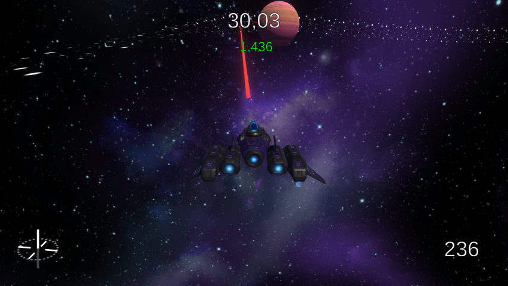
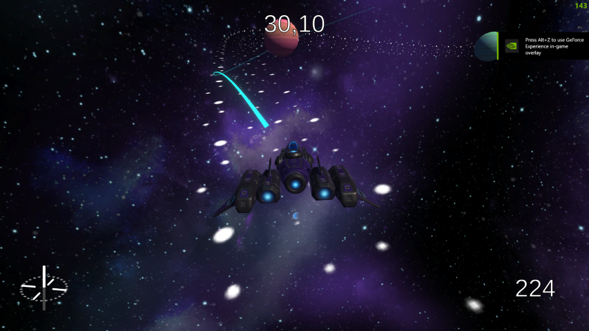
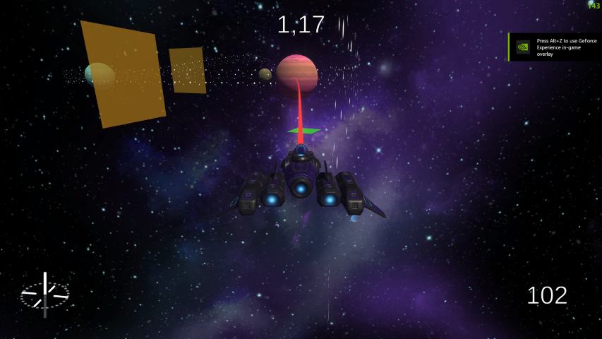
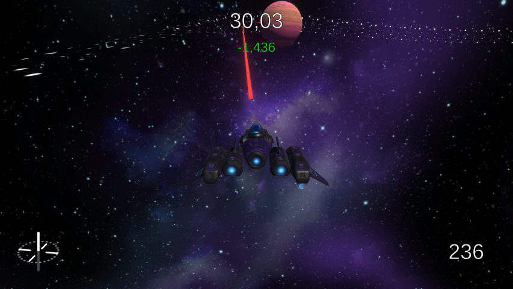
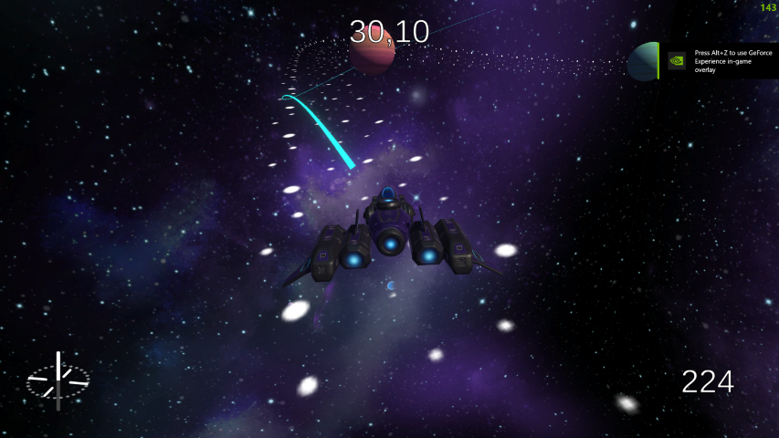
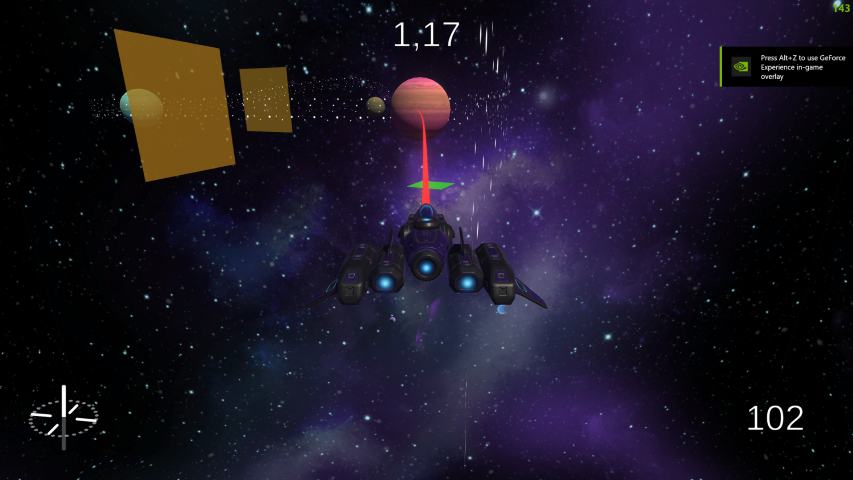

Blue Shift
A 3D Space Racing Game
In this game, players use orbital mechanics combined with omnidirectional thrust to navigate challenging race tracks. By completing each track within set times, players earn badges. Earn all badges to win!
The movement mechanics are based on Newtonian gravitation laws and were inspired by Outer Wilds.
The most challenging part of the game's implementation was comunicating feedback to the player. Space is vast, and your velocity is hard to gauge when not zooming past trees or other spaceships. As such I implemented various UI startegies to make the player feel the impact of their thrust.
The racing element is single-player. Instead of racing other players, players repeatedly try to beat their own best time.
This game was made for my Game Design June Exams in 2024.
 
